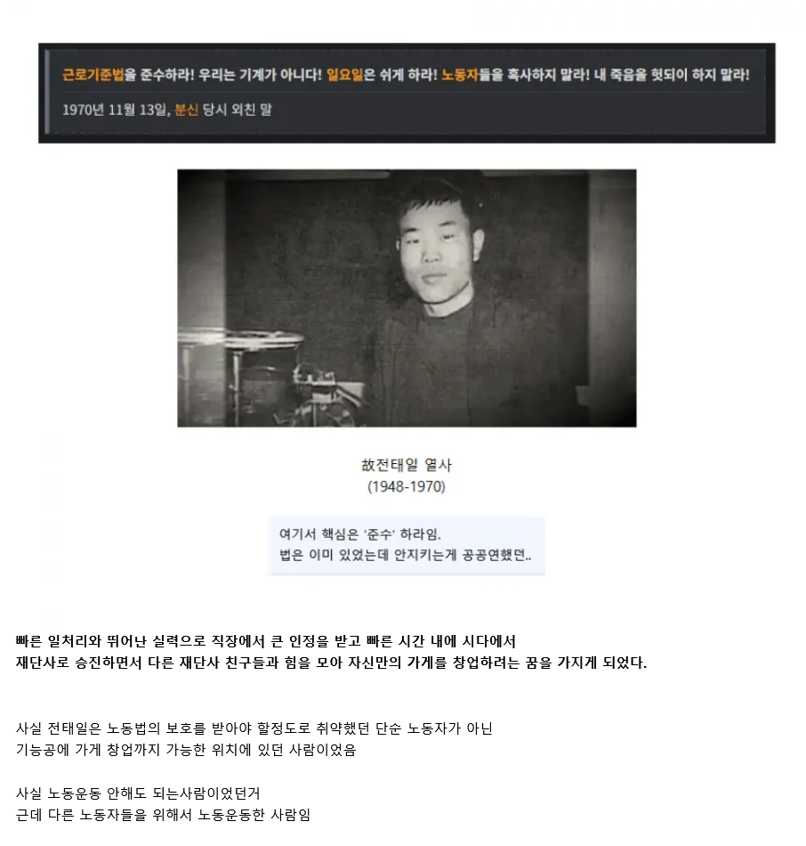

https://www.fmkorea.com/best/10279413437

https://www.fmkorea.com/best/10279413437

전태일은 근로기준법 준수하는 사업장을 만들기 위해 사업자금을 모으려 신문광고까지 했는데, 여기서 자신의 눈을 기증하겠다고까지 했음
열사
원래 뭐가 좀 있어야 저런 대단한일을 할수있는거지
우리나라는 삼권분립이기 때문에 법을 아무리 만들어 놔도 해석하는 놈들 마음이고 처벌하는 놈들 마음임
저때 삼권분립 제대로 아니었어요
어허
우리는 판사의 법해석이 제한되는편임 영미법이 판사들의 법해석을 자유롭게 허락하기때문에 개붕이가 말하는거에 가까움
저때는 우리나라도 판사의 힘이 더 강했음. 강간당한 여자랑 남자랑 판사가 중매해줄테니까 맺어주는거 어떠냐 이러던 시절인데...지금 판사가 그러면 목숨도 부지하기 힘들겠다.
뭔 ㅈ같은 소리야 영미법계가 대륙법보다 판사의 해석 재량을 더 넓게 보는데
그리고 삼권분립 안하면 법 만드는놈이 집행도한단건데 더 문제가 커지는거아님?
좀 뭘 알고 씨부려라
저 당시 의류업이 진짜 노동자 갈아서 돈 버는 업종이였던지라 거의 산업혁명 영국급이였지
진짜 저 시절은 노동자 육체,건강 갈아서 급성장 하던 시절이었음..
지금 7080 이상 세대 노동자들의 산업기 희생 덕에 지금 대한민국 경제의 초석이 마련됐지
내가 의류업인데 동대문 창신동 오래된 공장가면 저때 구조 아직 베스무리
하게 남아있는곳들 있는데
진짜 여기서 일을 하능게 맞나 싶은 공간에서 열악하게 일함.
2026년 현대 대한민국과 동떨어진 공간이 창신동임. 물론 급여나 근무여건은 예전 같지 않으나
여전히 소규모 봉제공장은 4대보험과 세금 밖의영역임. 아직도 흰봉투에 현금다발로 모든 결제와 월급이
이루어짐.
많은 산업이 도태되는 것이 사실 타국과 임금 등 경쟁력 상실도 있지만 그것 외에도 오래된 산업 구조와 시스템이 현대적인 그것으로 변혁을 못하기 때문인 것도 큼
기업 하나이면 대기업처럼 영향력 큰 곳에서 대표가 밀어붙이면 가능한 경우도 있지만 저런 산발적으로 흩어진 영세 자영업자들의 모임이나 협회 길드 같은 경우엔 경쟁력 상실보다 개혁을 못해서 그 산업 자체가 사라져버리는 경우가 더 많음
우리는 양반인 편이고 일본은 좀 더 심하고 유럽은 개노답인 경우
'모든 산업재해는 자본가에 의한 타살이다'
패독갤 최고 아웃풋 ㅋㅋ
직접 제조일 하는 사람들 중 1020대 여공들이 많았다는데
여공들 재봉기 바늘로 손뚫리는 산재 당해도 대충 봉합후 다시 일시키고, 장시간 먼지흡입으로 피토하고 쓰러지고, 건강문제 생긴거 들키면 무일푼으로 쫓겨나고 그러는 실태를 정말 많이 봐왔다함.
휴일 없이 일한건 기본이었고 매일 14~17시간 노동이고.
생리통 심해도 약도없이 참고 일해야 했고, 그러면서 돈은 쥐꼬리만치 주고,
높은 직급이었더래도 동정심이 많은 성격상 두고만보기 힘들었을듯
이런사람이 위인이지
5만원에 그려졌어야
진정한 위정자
편지 전문 읽으면 진짜 눈물이 절로 남
찐위인임
여공들 돈 없다니까 돈 다 줘버리고 청계천에서 걸어서 집까지 간 이야기보고 진짜 레전드다 싶더라.. 난 죽어도 못함
저게 떼법의 시작임 감히 '법률준수' 를 요구하며 떼를써??
저걸 떼쓴다고 하면 참 할 말이 없는데
비꼬는 거지 ㅋㅋㅋ
요즘엔 진짜들이 많아서 비꼬는 건지 진심인지 구분이 안 감
글킨혀

물론 난 몰랐지만 대부분 개혁은 상급자가 개아리를 틀어야 일어나는거임
SKY 의대 법대 이런애들이 지금의 대학무용론을 펼치면서 인터뷰하고 여론전해야 먹히지
어디 이름도 들어본적없는 지방 2년제 대학출신인애가 말해봐야 열등감으로밖에 안보이지
정글고 교장.......
기득권층 내에서 나와야 울림이 있거든.
만화 태일이 추천
겨우 스물 두 살...

GOAT
법이 있는것만으로는 충분치 않은 예